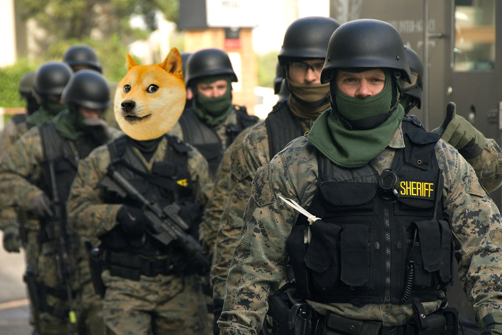

Krypto ubezpieczenie
Jak Rahim zrobi token to...
Co prawda to prawda, na Rahima token nie ma bata, jest zajebisty.
Powstają więc nowe instrumenty finansowe i jako że wciąż żyjemy w ekonomii wolnorynkowej, to jeżeli jedno idzie w gore to drugie idzie w dół - w przypadku giełdy zawsze jest druga strona transakcji.
Niezbyt często rozważane są bardziej bezpośrednie zagrożenia wynikające z tworzeniem instrumentów finansowych tego typu. Jednym z nich jest powstanie finansowej zachęty do działania na czyjąś szkodę, z zabójstwem włącznie. W obecnych realiach, nie jest prosto zarobić na czyjejś śmierci. Jeszcze trudniej jest zrobić to anonimowo. To zmienia się jednak wraz z pojawieniem się odpowiedniego instrumentu finansowego. Token personalny, można przecież na różne sposoby „szortować”, czyli zarabiać na spadku jego wartości. Tworząc rynek predykcyjny obstawiający takie zdarzenie, można będzie bezpośrednio i anonimowo zmonetyzować czyjąś śmierć.
To może się stać realny problem
- To powyżej pochodzi ze świetnego artykułu autorstwa Jana Kłosowskiego.
- Tutaj uprowadzili właściciela giełdy.
- Post na Reddit dlaczego ConsenSys nie polecial na DEVCON3 Meksyku.

My Rahima lubimy bardzo.
Nie chcemy aby w wypadku wypadku cena tokena spadla do zera.
Nie chcemy aby komukolwiek opłacało się Rahimowi zrobić krzywdę.
Nie chcemy aby komukolwiek sie oplacalo złamać prawo - dlatego zmieniamy teorię gier, tak żeby naprawdę sie nie oplacało.
OPCJA 1) milion pieniędzy okupu. Krótka piłka, na drzewo.
OPCJA 2) milion pieniędzy na opłacenie służb "ratunkowych".
To nie są bandyci. To nie są kibole. To byłe służby specjalne doświadczone w Iraku i Afganistanie. Dlaczego byłe? No bo te obecne wciąż pracują dla państwa, a te na "emeryturze" lubią sobie czasem postrzelać bez konieczności wypełniania raportów. Cześć z nich pracuje na statkach by bronić przed piratami u wybrzeży Somalii. Są dobrze przeszkoleni i mają dostęp do zabawek ktorych nie mozna tak łatwo dostać na Allegro.
Jeśli jesteście wilkiem bardzo złym i wciąż uważacie że bardziej się wam sie opłaca - załóżmy spółkę, pracujmy razem, to honor móc tworzyć i budować z mądrzejszymi od siebie.
Ja zawsze byłem, jestem, raczej będę peace & love, harmonia i połączenie z kosmosem.
Celem tego biznesu jest to żeby się wszystkim opłacało żyć długo i szczęśliwie.
Dopiero od czasu pierwszego użerania sie w sądzie jestem za tym żeby obywatele mieli dostęp do broni - w razie czego móc się obronić przed policja opłacana przez państwo, zeby państwo sie bało i szanowało obywatela.
Mały druczek
- Nie mamy (jeszcze) miliona pieniędzy.
- Trochę podróżowałem i dużo się uczyłem.
- Nie sprzyja to pracy zarobkowej.
- Health is new wealth, time is new money.
- Zdrowie to nowe bogactwo, czas to nowe pieniądze.
- Zaproś mnie warsztat z kryptowalut:
- Pisałem kod dla 5 projektów przed-podczas-po ICO.
- Tutaj jest moje krypto CV, nie ma dużo takich gości jak ja.
- Uważam że jestem ogarnięty...
- ...a pod niektórymi względami może i nawet całkiem niegłupi.
- Rozwód, podróże, kiepskie inwestycje - finansowo zaczynamy na nowo LOL
- Więcej informacji na priv: email@genesis.re
- Więcej informacji na fejsbuniu #RahimCoin